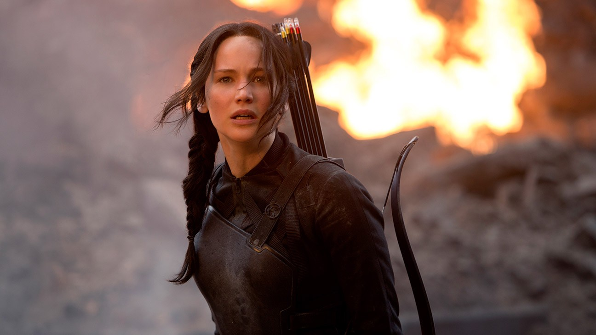
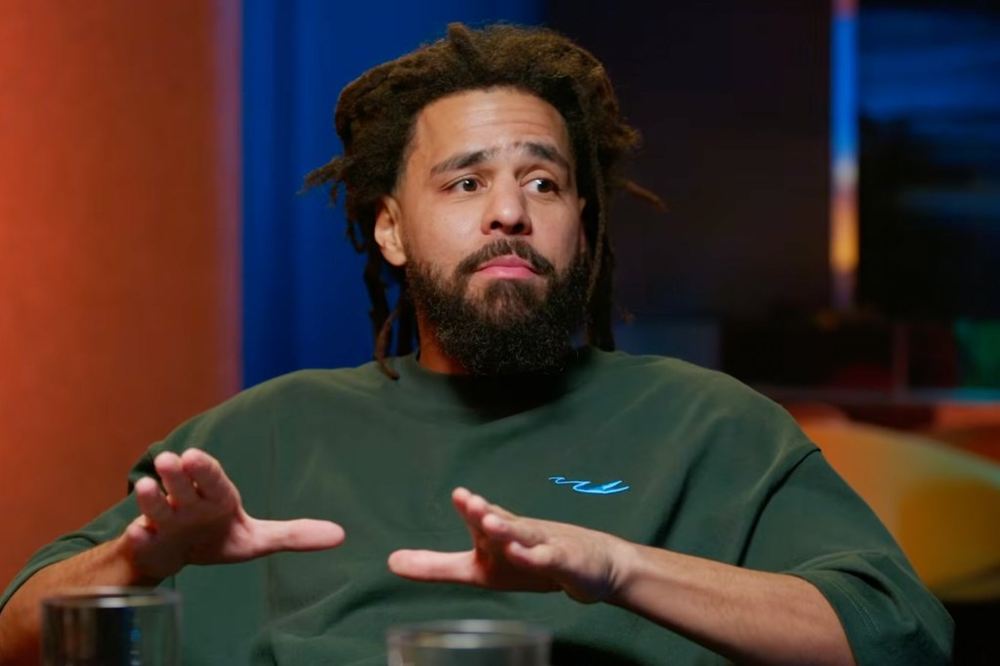
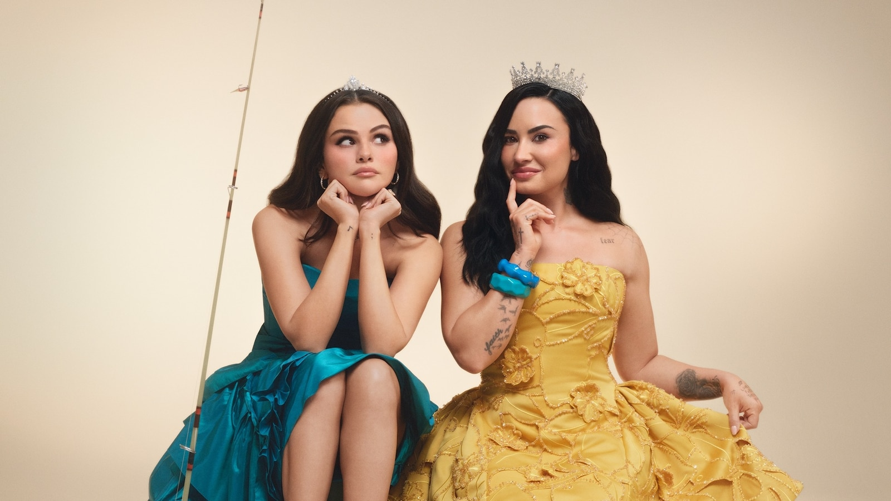
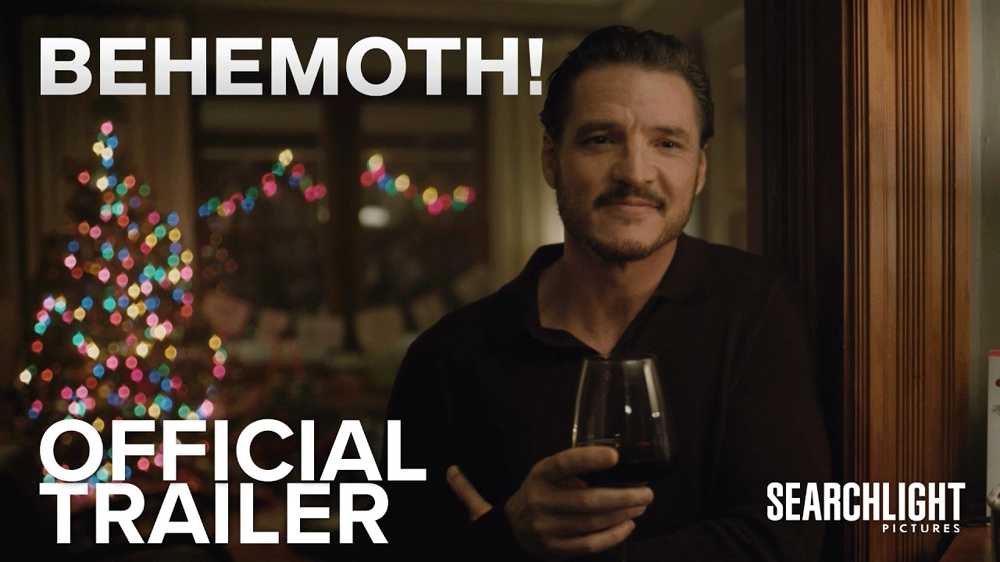

Jennifer Lawrence confirms she’s back as Katniss in Sunrise on the Reaping

After months of Lionsgate keeping it quiet, Lawrence told Call Her Daddy host Alex Cooper that returning to Panem was “unbelievable” and “so emotional,” with the same crew and camera team from the original films. She also confirmed Josh Hutcherson and Woody Harrelson are back, saying she and Hutcherson “didn’t walk to the bathroom without our arms around each other,” and that Harrelson climbed into her hotel room through the window, uninvited, because “it would not be the same” if he used a door.
The prequel follows 16-year-old Haymitch (Joseph Zada) in the Second Quarter Quell, 24 years before the first film, with Ralph Fiennes as President Snow. The legacy characters are expected to appear in flash-forwards or a framing device. On the same podcast, Lawrence said she gave herself the famous 2013 pixie cut to protest producers who wouldn’t give her a wig, and recalled shutting down unapproved crew on a nude-scene set. It opens November 20.
 Sunrise on the Reaping trailer on YouTube →
·
Sunrise on the Reaping trailer on YouTube →
·
 The Hollywood Reporter →
·
The Hollywood Reporter →
·
 Lawrence on the nude-scene set (THR) →
Lawrence on the nude-scene set (THR) →
J. Cole says he’s not retiring after all, and opens up about the Kendrick feud

Cole made The Fall-Off thinking it would be his last album, but after its sold-out arena tour he told GQ, sitting with longtime manager Mark Pitts in Las Vegas, “Nah, I’m not using that word at all.” He added, “I don’t know when the next thing is going to happen, but I’m definitely not going to say no.” The double album hit No. 1 in February, his seventh chart-topper on the Billboard 200.
He also looked back at 2024, when Kendrick Lamar dissed him on “Like That” while Cole had a Lamar verse lined up for his own album. “I got to like respond without responding, but still try to save face,” he said of “7 Minute Drill,” which he apologized for and pulled days later, clearing the way for Kendrick vs. Drake.
Selena Gomez and Demi Lovato recreate Princess Protection Program, and fans lose it

For a Rare Beauty campaign called “Still Making Each Other Blush,” the old friends restaged the 2009 Disney Channel movie’s poster in its blue and yellow gowns and shot a video in the style of their early YouTube vlogs, opening with their old “Yo. Yo. Yo.” and lip-syncing “One and the Same” on a twin bed. The product is a two-blush set named the Delena, after fans’ nickname for the pair.
Replies filled up with “this is my whole childhood” and “Delena is back,” since the two had a years-long falling-out before Gomez turned up at one of Lovato’s concerts in April. A few fans called it nostalgia used as marketing, but the reunion was everywhere Wednesday.
Pedro Pascal is a cellist in crisis in the first Behemoth! trailer

Searchlight released the full trailer Wednesday for Tony Gilroy’s first film since Andor. Pascal plays Alex Serian, a gifted cellist who comes home to Los Angeles after 20 years on the road and, in the middle of a midlife crisis, trades live concerts for recording film scores. Olivia Wilde, Eva Victor, Will Arnett and Hank Azaria co-star.
It premiered at the New York Film Festival this month and opens December 4, which puts Pascal in theaters two weeks before Avengers: Doomsday.
Bottom of the news
- Jennifer Lopez, Robert Zemeckis and Netflix all called reports of a feud over The Last Mrs. Parrish edit “categorically false.”
- Paramount hired David Bruckner to direct and Nick Antosca to write Smile 3, while Parker Finn stays on as a producer.
- James Gunn called Batman, Superman and Wonder Woman the DCU’s “diamond characters” and said Krypto, John Stewart and Peacemaker could become diamonds too.
- Former Lucasfilm chief Kathleen Kennedy will run the LA 2028 Olympic ceremonies, replacing new Netflix content chief Peter Rice.
- A24’s Alex Garland Elden Ring movie, budgeted near $200 million, heads to AFM as the biggest stand-alone film ever sold at a market.
- Netflix set December 3 for its six-part Dolly Alderton Pride and Prejudice.
- Russell Brand’s wife Laura testified in his defense at his London sexual-offences trial.
- Everything But the Girl announced Blue Reservoir for February, and the Flaming Lips set The Teardrop Throbs for January on Third Man.
- Karol G and Drake’s “Ahí” is No. 1 on Billboard’s Latin Airplay chart.